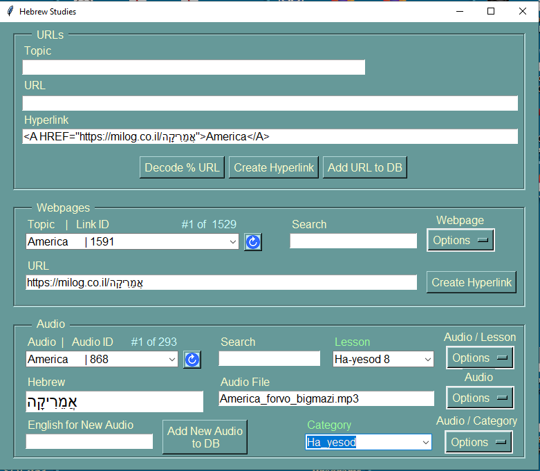

Hebrew Studies
This app started as a simple tool to format URLs into hyperlinks to place inside
Anki Hebrew flashcards and grew into a database of Hebrew related webpages then into
a database of Hebrew audio files for the study of Hebrew vocabulary and grammar using
the book "Ha-yesod The Fundamentals of Hebrew" by Uveeler and Bronznick.

The app is divided into 3 sections:
1. A URL class that writes URLS to the database, translates percent encoded
Hebrew into Hebrew characters and creates hyperlinks from the Topic and URL
fields.
2. A Webpage class that retrieves the URLs from the database and displays the URLs'
webpages, searches the database URL topics for keywords, saves any changes made to
the URL or its topic, deletes URLs and links URLs to the Hebrew displayed in the
Audio frame. A hyperlink can also be created from the webpage's Topic and URL
fields which is then displayed in the Hyperlink field of the URL frame above.
3. An Audio class that adds and retrieves Hebrew audio filenames in the database
and plays the audio files saved in the app's Media folder. The audio filenames
can be added to Ha-yesod lessons or to categories.